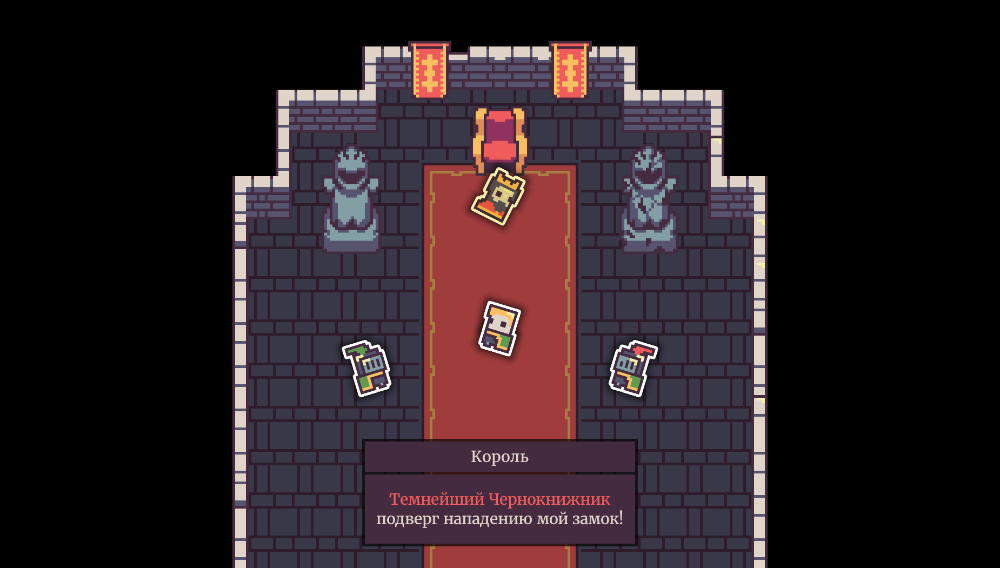
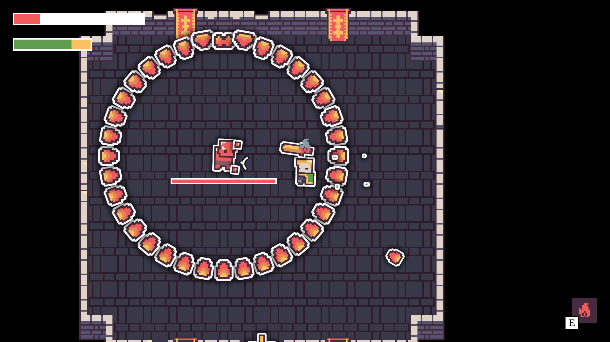
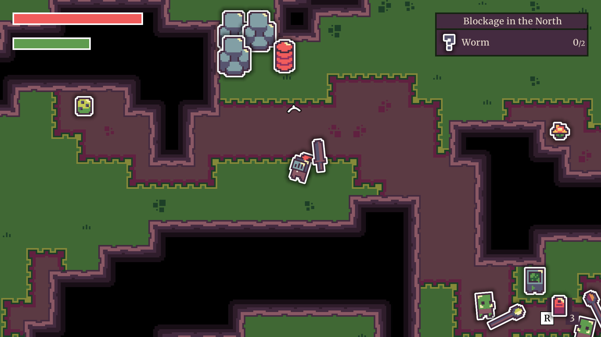

Switch to English 🇬🇧
Алексей Чистов
telegram: @agechistov | agechistov@gmail.com
Видеоигра — C++ (12/2024 — н.в.)
Готовлю страницу в Steam.



Сокращение Рутины При Разработке
Демонстрирую техники, которые облегчают мою жизнь разработчика.
Раскрыть подробности
Техники:
- Система записи и воспроизведения действий игрока.
- Горячая перезагрузка кода через DLL.
Как это облегчает мою жизнь:
- Пример 1. Кто-то другой играет в мою игру ⇒ она crash-нулась ⇒ я воспроизвожу запись их действий. Мне не требуются расспросы в духе «что вы нажимали, из-за чего игра crash-нулась?»
- Пример 2. Я сталкиваюсь с багом ⇒ (у меня уже есть запись моих действий) ⇒ из раза в раз запускаю отладчик и игра проигрывает записанные действия автоматически.
- Пример 3. Мне нужно подредактировать значения в игре ⇒ несколько раз изменяю C++ код и перезагружаю DLL. Игру перезапускать часто нет необходимости.
- Это не заменяет тесты. Это их дополняет.
Jonathan Blow и Casey Muratori отмечают важность сокращения времени, затрачиваемого на рутинные действия:
- Видео. Handmade Hero Day 023 — Looped Live Code Editing. Casey Muratori демонстрирует запись и воспроизведение действий игрока, а также горячую перезагрузку DLL.
- Видео. Jonathan Blow on scripting languages. На фоне Jonathan Blow прогоняет тесты его игры. Это в сущности и есть воспроизведение записи действий игрока.
3D Демо Перемещения С Помощью Троса — C++ (2024)
Поработал в 3D, подтянул математику, а также опробовал Raylib.
3D Пончик — C++ (2024)

Закрепил основы 3D, матричных трансформаций, линейной алгебры и программирования на C++ без использования библиотек.
Roads of Horses (10/2023 — 09/2024)


Видеоигра, разрабатывать которую я начал на Unity, C#. После — портировал на C++. Вдохновленный Handmade Hero, я занимался этим проектом, укрепляя навыки программирования, изучая работу CPU, работу с памятью, рендеринг, аудио и пр.
«Dark Souls 3» Cheat Sheet tool – Reddit (2018)

Программа для ручного отслеживания прогресса в «Dark Souls 3» (Python, PyQt)
«Monster Hunter: World» Printable Monsters Weaknesses Booklet – Reddit post, Updated Reddit post (2018, 2021)

Набор изображений/документов для печати, что отображает уязвимости монстров в «Monster Hunter: World» (Python, Pillow)
Раскрыть ещё проекты
The Clocktower Letter – itch.io (2023)


Короткая игра платформер для Metroidvania 21 game jam. Я был программистом в распределённой команде из 4-х человек (Unity, C#)
Остальное (2016-2023)


Некоторые фишки, применённые к платформеру на Unity, C#.


Credited Work
- Vanilla Tweaks мод для «Terraria» от gardenapple — Поделился кодом для ускорения Extractinator-а (C#) (2017)
- Run on Save расширение VS Code от pucelle — Исполнение команд VS Code-а при сохранении файлов (TypeScript) (2020)